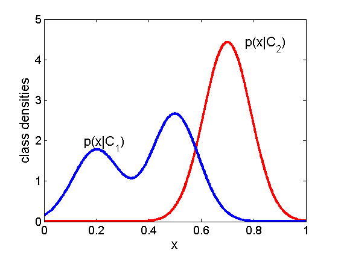
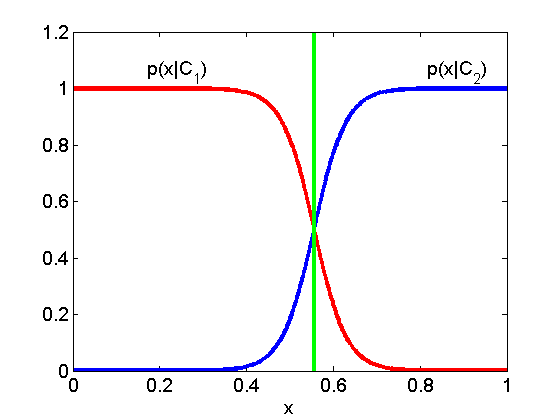
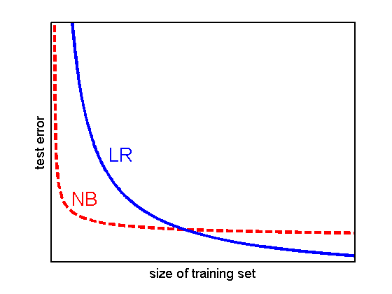

Sketch of difference between Generative vs Discriminative classifier
Contents
Class conditional densities
figure;
hold all;
domain = 0:0.001:1;
f1 = @(x)gausspdf(x,0.7,0.09.^2);
f2 = @(x) 0.4*gausspdf(x,0.2,0.09.^2) + 0.6*gausspdf(x,0.5,0.09.^2);
linespec = {'LineWidth',3};
plot(domain,f1(domain),'-r',linespec{:});
plot(domain,f2(domain),'-b',linespec{:});
set(gca,'XTick',0:0.2:1,'YTick',0:5,'XLim',[0,1],'YLim',[0,5],'box','on','FontSize',14);
xlabel('x','FontSize',16);
ylabel('class densities','FontSize',16);
annotation(gcf,'textbox',[0.2366 0.4 0.096 0.07927],...
'String',{'p(x|C_1)'},...
'FontSize',16,...
'FitBoxToText','off',...
'LineStyle','none');
annotation(gcf,'textbox',[0.7127 0.794 0.096 0.07927],...
'String',{'p(x|C_2)'},...
'FontSize',16,...
'FitBoxToText','off',...
'LineStyle','none');

Class posterior
figure();
hold all;
domain = 0:0.001:1;
f1 = @(x)sigmoid(27*x-15);
f2 = @(x) sigmoid(-27*x+15);
linespec = {'LineWidth',3};
plot(domain,f1(domain),'-b',linespec{:});
plot(domain,f2(domain),'-r',linespec{:});
plot([0.556,0.556],[0,1.2],'-g',linespec{:});
set(gca, 'XTick', 0:0.2:1, 'YTick',0:0.2:1.2, ...
'XLim', [0,1], 'YLim', [0,1.2], 'box','on', 'FontSize', 14);
xlabel('x','FontSize',14);
annotation(gcf,'textbox',[0.25 0.794 0.096 0.07927],...
'String',{'p(x|C_1)'},...
'FontSize',14,...
'FitBoxToText','off',...
'LineStyle','none');
annotation(gcf,'textbox',[0.75 0.794 0.096 0.07927],...
'String',{'p(x|C_2)'},...
'FontSize',14,...
'FitBoxToText','off',...
'LineStyle','none');

Illustration of the generalization error vs size of training set
figure;
domain = 0:0.01:10;
NB = @(x)x.^(-0.5);
LR = @(x)(8./(x.^0.8))-2;
linewidth = {'LineWidth',3};
hold all;
set(gca,'XTick',[],'YTick',[],'FontSize',16);
axis([-0.1,10,-1,10]);
plot(domain,NB(domain),'--r',linewidth{:});
plot(domain,LR(domain),'-b',linewidth{:});
set(gca,'FontSize',14,'LineWidth',2);
xlabel('size of training set');
ylabel('test error');
box on;
annotation(gcf,'textbox',[0.1702 0.25 0.06392 0.1205],...
'String',{'NB'},...
'FontSize',20,...
'FitBoxToText','off',...
'LineStyle','none',...
'Color','r');
annotation(gcf,'textbox',[0.2648 0.4 0.06392 0.1205],...
'String',{'LR'},...
'FontSize',20,...
'FitBoxToText','off',...
'LineStyle','none',...
'Color','b');
